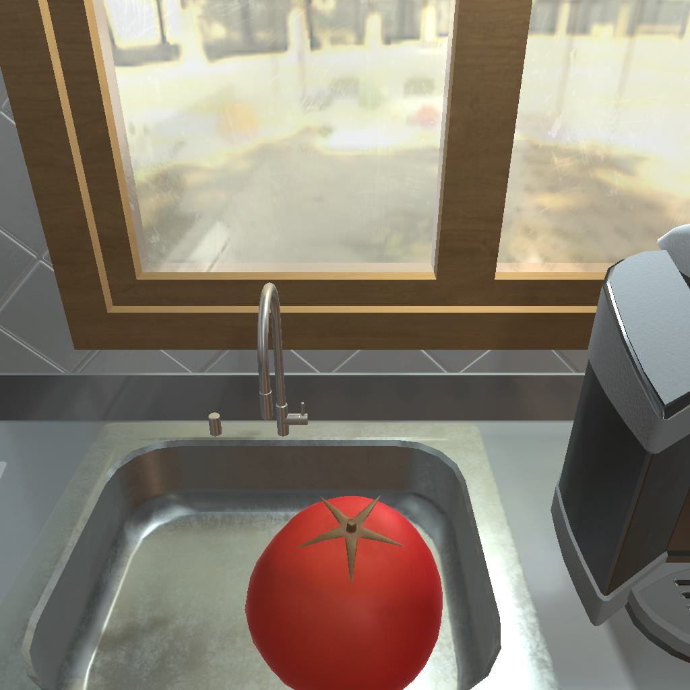

---------------------------------------------------------task: 12---------------------------------------------------------
--------------------------------------------------------------------------------------------------------------------------------------------------------------------
--------------------------------------------------------------------------------------------------------------------------------------------------------------------
Step:--------------------------------------------------------------------------18-------------------------------------------------------------------------------
----------------------------------------
VLM Prompt:
Image1:
**Instruction**
1. Analyze the provided image to identify all visible household objects, focusing on those relevant to the task description "clean some tomato and put it in countertop."
2. Use the analysis of the image and the task hint "The agent must find an object of the desired type, pick it up, go to a sink or a basin, clean the object with a sink or basin, and then find the correct location to place it and put it down there. The agent does not need to use soap bottle or faucet to clean the object, and the agent just needs to do action that is "clean the object with the sink or sink basin"." to answer the question: what is the most reasonable action in the choices for the task description "clean some tomato and put it in countertop"?
4. Decide and write the answer using the template: The answer is: (i): , where i is the real number. If there is no desired object in the image, search every place based on **Initial Observation** to find the object. And if no one is exactly correct, choose a similar answer.
**Initial Observation**
You are in the middle of a room. Looking quickly around you, you can see cabinet (1-6), microwave (1), countertop (1-2), coffeemachine (1), toaster (1), sink (1), sinkbasin (1), fridge (1)
**Answer Choices**
(1): go to cabinet 1
(2): go to cabinet 2
(3): go to cabinet 3
(4): go to microwave 1
(5): go to cabinet 4
(6): go to cabinet 5
(7): go to cabinet 6
(8): go to countertop 1
(9): go to coffeemachine 1
(10): go to toaster 1
(11): go to countertop 2
(12): go to sinkbasin 1
(13): go to fridge 1
(14): put tomato 1 in/on sink 1
(15): clean tomato 1 with sinkbasin 1
(16): examine tomato 1
(17): examine sink 1
**Answer**
Let's think step by step by following the instructions.
----------------------------------------
----------------------------------------
Original Response:
Firstly, we need to clean the tomato. The image shows a tomato placed in the sink, which means it is ready to be cleaned. Therefore, we do not need to go to any cabinets, microwave, coffeemachine, toaster, or fridge to complete the task as per the "Initial Observation."
Based on the task description, after cleaning the tomato, we need to put it on the countertop. The image does not show the countertop, but based on the "Initial Observation," we know there are two countertops available.
The most reasonable action from the given choices to complete the task "clean some tomato and put it in countertop" would be to clean the tomato with the sinkbasin first and then place it on one of the countertops.
The answer is: (15): clean tomato 1 with sinkbasin 1, and then (11): go to countertop 2 to place the clean tomato.
----------------------------------------
----------------------------------------
>>> Refine Original VLM Response and Get Pure Action: clean tomato 1 with sinkbasin 1, and then (11): go to countertop 2 to place the clean tomato
----------------------------------------
-----------------------------------------------------------------
Running time: 9.096662998199463 seconds
Total Money: 3.7993899999999994
-----------------------------------------------------------------
-----------------------------------------------------------------
Text Observation:Nothing happens.
-----------------------------------------------------------------
UNSUCCEED